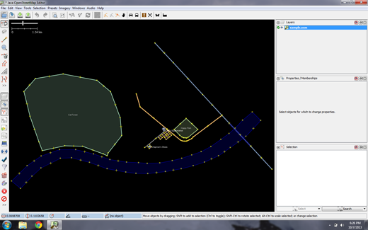

Guida rapida JOSM¶
JOSM è un editor offline per dati OpenStreetMap (OSM) ricco di caratteristiche ed estensibile, scritto in Java.
Supporta il caricamento di tracce GPX a se stanti e dati da traccie GPX così come editare gli esistenti nodes (punti), ways (linee), tags per i metadati (informazioni chiave/valore) e relations (sequenze ordinate di punti e linee) dal database OSM. Le tracce GPX, sono usualmente scaricate precedentemente da un ricevitore GPS o da altre sorgenti di dati.
Questa guida rapida copre l’uso di base dell’editor Java OpenStreetMap.
Avvia JOSM¶
Dal desktop, scegli . Quando JOSM si avvia, avrà un aspetto simile a questo:

Caricare una mappa di esempio (fittizia)¶
Ora apriamo un file OSM di esempio che useremo per imparare i modi di base per disegnare mappe con JOSM. Nota che questa mappa non è reale, nel senso che non è una vera mappa di un luogo reale, quindi non la salveremo su OpenStreetMap.
Scarica il file qui: sample.osm
Ora apriamo il file della mappa di esempio in JOSM. Clicca sul pulsante «Apri» in alto a sinistra.

Trova il file sample.osm. Probabilmente si trova nella tua cartella Downloads, a meno che tu non l’abbia salvato da qualche altra parte.
Cliccaci sopra e poi clicca su «Apri». Ora dovresti vedere una mappa di esempio che assomiglia a questa:

Nota
Userei questi dati per provare varie tecniche di editing. Non devi però mai caricare questi dati fittizi nel database.
Navigare nella mappa¶
Per spostare la mappa a sinistra o a destra, in alto o in basso, tieni premuto il tasto destro del mouse e muovi il mouse.
Ci sono diversi modi per ingrandire e ridurre la mappa. Se hai un mouse, puoi usare la rotella di scorrimento per ingrandire e ridurre. Se stai usando un computer portatile e non hai un mouse, puoi ingrandire e rimpicciolire usando la barra della scala in alto a sinistra della finestra della mappa. Trascina la barra a sinistra e a destra tenendo premuto il mouse a sinistra e spostando la barra a sinistra o a destra con il mouse.

Guarda la mappa di esempio. Ci sono diversi tipi di oggetti qui. C’è un fiume, una foresta, alcuni edifici, diverse strade e un paio di negozi. Per selezionare un oggetto, clicca su di esso con il tasto sinistro del mouse.
Punti, linee e forme¶
Mentre clicchi su diversi oggetti sulla mappa di esempio, nota che ci sono tre diversi tipi di oggetti sulla mappa. Ci sono punti, linee e forme.
I punti sono una singola posizione, rappresentata da simboli. Su questa mappa di esempio, ci sono due punti, un negozio di scarpe e un supermercato. Il negozio di scarpe è rappresentato da un simbolo di scarpe, e il mercato è rappresentato da un carrello della spesa.
Ci sono anche diverse linee sulla mappa, che rappresentano le strade. Se guardi attentamente vedrai che all’interno delle linee ci sono anche dei punti. Questi punti non hanno nessun simbolo o altre informazioni associate a loro, ma aiutano a definire dove si trova la linea.
Infine, ci sono numerose forme sulla mappa di esempio, che rappresentano diversi luoghi - una foresta, un fiume, un parco, ed edifici. Una forma è usata per rappresentare un’area, come un campo o un edificio. Una forma è esattamente come una linea - l’unica differenza è che la linea inizia nello stesso punto in cui finisce.
È facile pensare a una mappa come se contenesse questi tre tipi fondamentali di oggetti - punti, linee e forme. In OpenStreetMap c’è una terminologia speciale che imparerai man mano che progredisci. In OSM, i punti sono chiamati node, e le linee sono chiamate ways. Una forma è chiamata closed way perché è solo una linea che finisce nello stesso punto in cui inizia.
Si può notare che quando si seleziona un oggetto, appare un elenco a destra della mappa in una finestra chiamata «Proprietà». Questi sono conosciuti come tag. I tag sono informazioni legate ad un punto, una linea o una forma che descrivono ciò che è. Impareremo di più sui tag in un capitolo successivo. Per ora tutto quello che dovete sapere è che queste informazioni aiutano a descrivere se il nostro oggetto è una foresta, un fiume, un edificio o qualcos’altro.
Pensa di disegnare una mappa a mano, e a come disegni anche punti, linee e forme. Quali altri luoghi sono meglio rappresentati da punti? Linee? Forme?
Modifica degli oggetti¶
Seleziona la foresta sul lato sinistro della mappa. Assicurati di cliccare sulla linea che circonda la foresta, non su uno dei punti sulla linea.
Ora tieni premuto il tasto sinistro del mouse e trascina il mouse. Dovresti essere in grado di spostare la foresta in una nuova posizione sulla mappa.
Clicca su uno dei punti sulla linea che circonda la foresta. Tieni premuto il tasto sinistro del mouse e trascina il mouse. Dovresti essere in grado di spostare il punto. Questo è il modo con cui puoi cambiare la forma di un oggetto, o spostare un punto.
Disegno¶
Sul lato sinistro di JOSM c’è una colonna di pulsanti. Molti di questi pulsanti aprono nuove finestre sul lato destro che forniscono maggiori informazioni sulla mappa. I pulsanti più importanti, comunque, sono in cima a questa colonna. Questi pulsanti cambiano ciò che puoi fare con il tuo mouse.
I pulsanti in alto in questa colonna sono quelli che userete di più. Sono utilizzati per selezionare gli oggetti e per disegnarne di nuovi.
Fino ad ora avete usato lo strumento Seleziona, che assomiglia a questo:

Prima di disegnare, è necessario assicurarsi che nulla sia selezionato.
Clicca nello spazio nero della mappa, dove è vuoto, per assicurarti che nulla sia selezionato.
Clicca sul secondo pulsante, lo strumento Disegna.

Trova un’area vuota sulla mappa e fai doppio clic con il mouse. Questo disegnerà un singolo punto.
Per disegnare una linea, fare un solo clic con il mouse. Muovi il mouse e clicca di nuovo. Continuare fino a quando si è soddisfatti della linea. Per terminare la linea, fai doppio clic con il mouse.
Disegna una forma nello stesso modo in cui disegni una linea, ma finisci la forma facendo doppio clic sul punto in cui hai iniziato la linea.
Aggiungere Preimpostazioni¶
Ora sappiamo come disegnare punti, linee e forme, ma non abbiamo ancora definito cosa rappresentano. Vogliamo poter dire che i nostri punti sono negozi, scuole o altro, e che le nostre forme sono campi, edifici o altro.
Clicca sullo strumento Seleziona, nella colonna dei pulsanti a sinistra.
Seleziona uno degli oggetti che hai disegnato con lo strumento Disegna.
Nel menu in alto, clicca su «Preimpostazioni» e scegli il tipo di posizione che vuoi definire.
Quando scegli su un predefinito, verrà visualizzato un modulo che ti chiederà ulteriori informazioni. Non è necessario compilare tutti i campi, ma potresti voler aggiungere alcuni dei campi importanti, come il nome dell’oggetto.
Quando hai finito di inserire le informazioni, clicca su «Applica Preimpostazione». Se tutto è andato bene, il tuo punto, linea o forma dovrebbe cambiare colore o mostrare un simbolo. Questo perché hai definito cos’è.
Disegna la tua mappa¶
Ora disegniamo una mappa per mettere in pratica le tecniche che avete imparato. Potresti voler ridisegnare la mappa che hai disegnato su carta in precedenza.
Trascinate la mappa lontano dalla mappa di esempio. Tieni premuto il tasto destro del mouse e trascina il mouse, fino ad avere una bella area vuota su cui disegnare.
Usa lo strumento Disegna per creare punti, linee e forme. Descrivi i tuoi oggetti selezionandoli dal menu Preimpostazioni.
Quando hai finito, dovresti avere la tua mappa, simile a quella di esempio che abbiamo aperto in sample.osm.
Rimuovere il layer di esempio¶
Una volta che vi sentite a vostro agio con queste tecniche di editing di base, potreste voler rivolgere la vostra attenzione alla mappatura delle caratteristiche reali.
Nota
È molto importante che prima si rimuova il livello con i dati di esempio. Questi dati sono fittizi e non devono essere caricati nel database di OpenStreetMap (le nuove versioni di JOSM lo impediscono automaticamente).
Nella finestra Livelli in alto a destra dello schermo seleziona il livello sample.osm. Poi clicca sull’icona del cestino nell’angolo in basso a destra della finestra. In alternativa puoi scegliere di cancellare dal menu contestuale del livello.
E ora?¶
Prova la documentazione di LearnOSM, da cui è stata tratta questa guida rapida: https://learnosm.org/en/josm/start-josm/
Per continuare l’editing devi prima scaricare i dati reali. Questo è spiegato nel prossimo capitolo: https://learnosm.org/en/josm/more-about-josm/
Sito web: https://josm.openstreetmap.de/